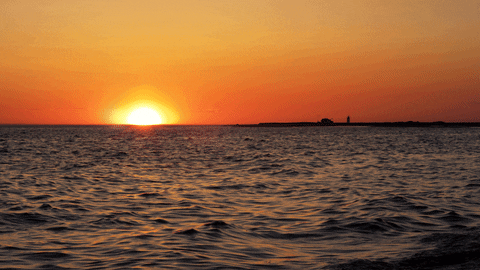
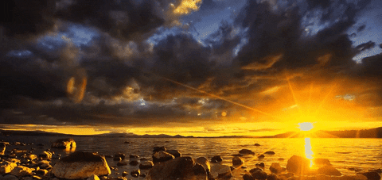

The Beauty of a Sunset
A sunset is more than just the end of the day—it's a breathtaking display of nature’s artistry. As the sun dips below the horizon, the sky becomes a canvas painted with warm shades of orange, pink, and purple. Whether viewed from the beach, a mountaintop, or your own backyard, a sunset offers a moment of peace and reflection, reminding us to slow down and appreciate the simple wonders of life.
Colors of a Sunset:
Sunsets are often red, orange, pink, and purple because of Rayleigh scattering. As the Sun nears the horizon, its light passes through more of Earth’s atmosphere. Shorter blue wavelengths scatter away, leaving the longer red and orange ones visible.
Symbolism:
- Sunsets often symbolize peace or closure
- The end of a journey or chapter
- Beauty in impermanence